钟表是用来计时的基本工具，对钟表时刻的认知是孩子必须掌握的一项基本技能。5～7岁的孩子已经能够知道整点、半点，能够知道钟面的时刻，知道分针和时针之间的关系。最好的知识来自实践，在解决钟表问题的时候，如果能够结合生活中的时钟或者闹钟玩具，孩子就能够更直观、更快地掌握钟表的知识。
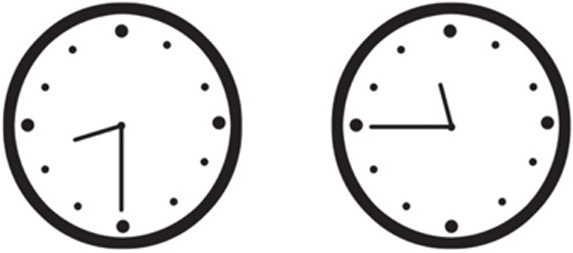
典型例题 1 读出下面钟面上的时刻，然后按照示例的表示方法把时刻写下来。
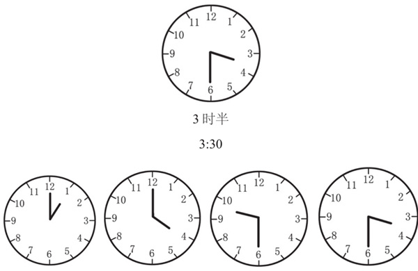
第1个钟面的分针指向12，说明是整点，时针指向1，表示正好是1时。
第2个钟面的分针指向12，说明是整点，时针指向4，表示正好是4时。
第3个钟面的分针指向6，说明是半点，时针在9和10之间，表示是9时30分。
第4个钟面的分针指向6，说明是半点，时针在3和4之间，表示是3时30分。
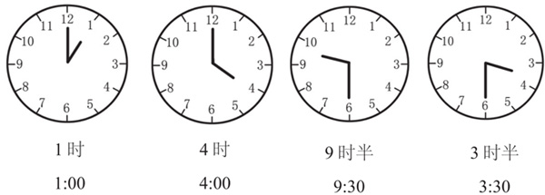
典型例题 2 读出下面钟面上的时刻，然后按照示例的表示方法把时刻写下来。
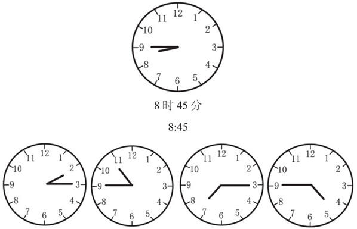
第1个钟面的分针指向数字3，说明是15分，时针在2和3之间，表示是2时15分。
第2个钟面的分针指向数字9，说明是45分，时针在10和11之间，表示是10时45分。
第3个钟面的分针指向数字3，说明是15分，时针在7和8之间，表示是7时15分。
第4个钟面的分针指向数字9，说明是45分，时针在4和5之间，表示是4时45分。
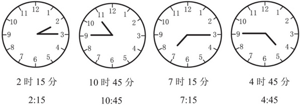
典型例题 3 根据时钟下面的时间，在钟面上画上时针和分针。
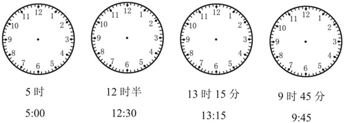
第1个钟面要求显示时间是5：00，分针指向12，时针指向5。
第2个钟面要求显示时间是12：30，分针指向6，时针指向12和1中间。第3个钟面要求显示时间是13：15，实际上是下午1时15分，分针指向3，时针指向1和2之间，靠近数字1。
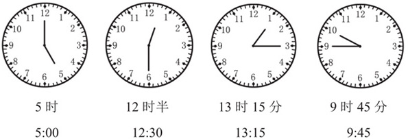
第4个钟面要求显示时间是9：45，分针指向9，时针指向9和10之间，靠近数字10。
典型例题 4 下面的2幅图都是在镜子里看到的钟面效果，你知道2个钟面指示的时刻吗？
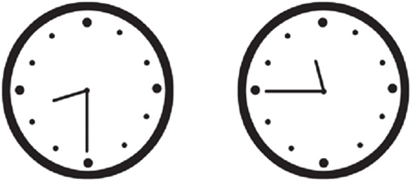
2个钟面没有刻度，而且是在镜子里面的效果，题目的难度比较大。首先把钟面还原，根据钟面在镜子里的效果，把钟面还原，效果如下。
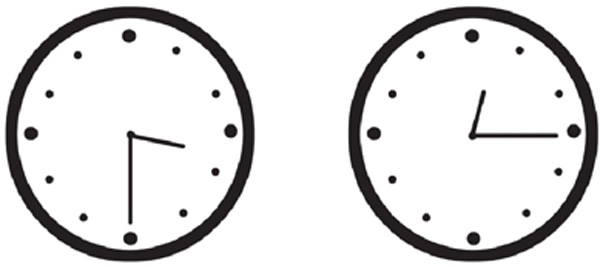
可以看出，第1个钟面的时间是3：30，第2个钟面的时间是12：15。
1.读出下面钟面上的时刻，然后把时刻写下来吧。
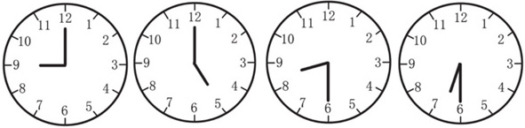
2.读出下面钟面上的时刻，然后把时刻写下来吧。
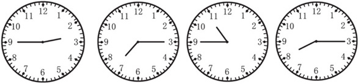
3.根据时钟下面的时间，在钟面上画上时针和分针。
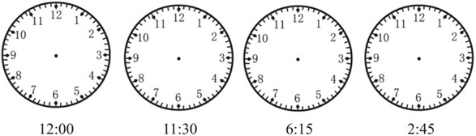
4.下面的2幅图都是在镜子里看到的钟面效果，你知道2个钟面指示的时刻吗？
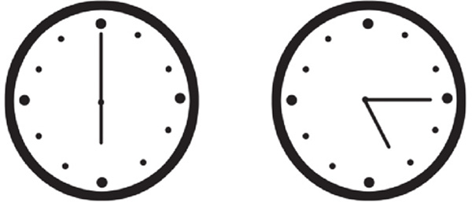